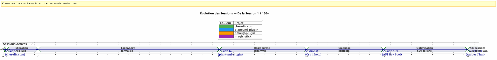
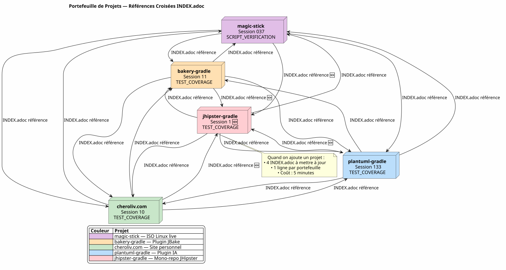

Gouverner un Agent IA avec du AsciiDoc : Ma Stratégie Eager/Lazy pour des Sessions Opencode sans Fuite de Contexte
Publié le 24 April 2026
Résumé
Quand on travaille avec un agent IA comme Opencode sur des projets complexes sur plusieurs sessions, on fait face à un problème fondamental : la fuite de contexte. L’agent ne se souvient pas de la session précédente. Tout ce qu’on lui a expliqué — l’architecture, les conventions, l’état du backlog — est perdu. Reconstruire ce contexte à chaque session est coûteux, lent et source d’erreur.
Cet article expose la stratégie artisanale que j’ai construite pour résoudre ce problème : un système de gouvernance persistant basé sur des fichiers AsciiDoc, avec une dichotomie Eager/Lazy pour optimiser la consommation du token de contexte, et une procédure de fin de session incontournable pour assurer la continuité.
La Scène : Lundi 21 Avril, 9h00
Je rouvre Opencode pour reprendre mon plugin Gradle plantuml-plugin. Hier soir, j’ai passé trois heures à discuter avec l’agent de l’architecture du pool de clés API — rotation round-robin, gestion des quotas, fallback automatique. Ce matin, l’agent me regarde avec des yeux de poisson rouge.
_ — Bonjour, je suis votre assistant Opencode. Comment puis-je vous aider aujourd’hui ? _
Pas de — Ah oui, le pool de clés API, on en était à la structure YAML. Pas de — Attention, PlantumlManager est un objet Kotlin singleton, pas une classe. Pas de — Non, on a décidé hier que SyntaxValidationResult restait une sealed class nested dans PlantumlService.
Tout est à refaire. Ou plutôt : tout est à réexpliquer. Je vais passer les vingt premières minutes de ma session à reconstituer un contexte que l’agent a déjà eu entre les mains hier. Vingt minutes de tokens brûlés. Vingt minutes où je pourrais coder, mais où je fais du pédagogique obligatoire.
Ce n’est pas un bug d’Opencode. C’est la nature même des LLM conversationnels : entre deux sessions, la mémoire de travail est entièrement effacée. L’agent ne se souvient pas de la mission précédente, des décisions prises, des pièges identifiés, du code qu’on a écrit ensemble.
J’ai vécu ça des dizaines de fois. Sur quatre projets simultanés. Avec des sessions qui s’enchaînent sur des semaines. J’ai calculé : en moyenne, 30 à 40 % du temps de session était consacré à recontextualiser l’agent. À la session 87 du projet plantuml-plugin, j’ai craqué. Je ne pouvais plus me permettre de réexpliquer pour la dixième fois que AttemptEntry est une data class top-level dans DiagramProcessor.kt.
Il me fallait un système. Pas un hack. Une vraie gouvernance.
La Genèse : Du Chaos à la Méthode
Les Premières Sessions : L’Âge des Ténèbres
Mon premier projet avec Opencode, plantuml-plugin, a démarré sans aucune gouvernance. Je pose une question, l’agent répond, on itère, la session se termine, et le lendemain on repart de zéro. C’était la session 1, puis la 2, puis la 3… jusqu’à la session 62 où je réalise que j’ai perdu des heures cumulées à réexpliquer la même architecture.
À la session 62, les chiffres sont là : 198 tests unitaires passent, 42 tests fonctionnels validés, le plugin fonctionne. Mais le coût cognitif est insupportable. Chaque nouvelle session commence par un monologue de vingt minutes sur la structure du projet.
L’Épisode du site.yml Détruit (Session 2, bakery-plugin)
La méthode naît aussi d’une catastrophe. Sur le projet bakery-gradle, à la session 2, je demande à l’agent de modifier le fichier site.yml. L’agent, sans vérifier si le fichier est versionné, fait un Write complet qui écrase le contenu. Résultat : les tokens réels (clés API Firebase, secrets de déploiement) sont remplacés par des placeholders factices. Le fichier n’était pas dans git — il était dans .gitignore pour protéger les secrets.
Sans sauvegarde. Sans git restore possible. Je suis bloqué. Il me faut reconstruire manuellement le fichier de configuration, retrouver les tokens dans mes gestionnaires de mots de passe, tout recoller.
C’est de cette frustration que naît la Règle Absolue 1b :
_ NE JAMAIS écraser un fichier config avec un Write complet quand un Edit partiel suffit. NE JAMAIS remplacer des valeurs sensibles par des valeurs factices. Vérifier git check-ignore et git ls-files avant toute modification. _
Cette règle, aujourd’hui gravée dans le marbre de tous mes fichiers AGENT.adoc et INDEX.adoc sur quatre projets, est née d’une erreur réelle qui m’a coûté une heure de travail manuel.
La Migration Markdown → AsciiDoc (Session 1, cheroliv.com)
Le 25 avril 2026, sur cheroliv.com, je prends une décision radicale : convertir l’intégralité de la gouvernance de Markdown vers AsciiDoc. Ce n’est pas esthétique. C’est fonctionnel. AsciiDoc offre une structure sémantique que les LLM lisent mieux : sections hiérarchiques, tableaux typés, admonitions (NOTE, WARNING, CAUTION), attributs de document lisibles par la machine.
La session 1 de cheroliv.com formalise la structure :
-
Conversion de
AGENTS.mdenAGENT.adoc -
Création des agents spécialisés :
CODER.adoc,SCRUM_MASTER.adoc,PLANTUML_DESIGNER.adoc -
Création de la structure Eager/Lazy :
INDEX.adoc,SESSIONS_HISTORY.adoc,AGENT_SESSION_MANAGER.adoc,SESSION_CHECKLIST.adoc,PROCEDURES.adoc
Un seul commit : 90975e9 refactor: migrate agent governance from Markdown to AsciiDoc. Et le site continue de fonctionner.

La timeline ci-dessus illustre la progression réelle. Le point de bascule est la session 87 : c’est là que la frustration du recontextualisation répétée dépasse le seuil de tolérance, et que la méthode Eager/Lazy cesse d’être une idée pour devenir une obligation.
La Stratégie : Eager/Lazy en Profondeur
Philosophie : Cache Informatique Appliqué à la Cognition
Mon approche s’inspire directement de la gestion de cache informatique. Tout ce qui est critique et fréquemment utilisé doit être immédiatement accessible (Eager). Tout ce qui est contextuel ou volumineux doit être chargé sur demande (Lazy).
Eager (Tableau de Bord) |
Lazy (Manuel du Propriétaire) |
Taille |
< 100 lignes, < 10k tokens |
Illimité, détaillé |
Chargement |
Auto, en début de session |
Sur demande de l’agent |
Contenu |
Règles absolues, mission courante, état critique |
Archives de sessions, historique complet, procédures détaillées, références techniques |
Rôle |
Orienter immédiatement l’agent |
Répondre aux questions de contexte profond |
Les Fichiers Eager : Le Tableau de Bord
Ces fichiers vivent à la racine de chaque projet et sont chargés automatiquement par l’agent au début de chaque session. Ils forment le tableau de bord — information critique, immédiatement accessible.
AGENT.adoc — Le fichier maître. Sur cheroliv.com, il fait 200 lignes et contient :
-
Les règles absolues du projet (pas de commit sans permission, pas de
rmsans confirmation) -
La structure du projet et les conventions de code
-
Les commandes essentielles (
./gradlew serve,./gradlew test) -
Les épopées et le backlog produit (user stories priorisées)
-
Les critères de qualité transverses (accessibilité, responsive, compatibilité)
Sur bakery-plugin, la Règle 0 est différente : ./gradlew -q publishToMavenLocal obligatoire après chaque modification du code source. Parce que tester le plugin sans republier le JAR local m’a fait perdre une heure à débugger un code qui n’était pas encore empaqueté.
PROMPT_REPRISE.adoc — La mission de la session en cours. Mis à jour à chaque fin de session, il contient :
-
Le numéro de session et la mission prioritaire
-
Le résumé de la session précédente (ce qui a été fait, ce qui reste à faire)
-
Les critères d’acceptation de la session courante
-
Les rappels techniques spécifiques
.agents/INDEX.adoc — Le point d’entrée. Il résume les règles absolues, les sessions récentes, et surtout le portefeuille de projets gérés avec la même méthodologie. À ce jour, cinq projets y figurent :
----
| magic-stick | Session 23 | SCRIPT_VERIFICATION.adoc | 2026-04-27 |
| bakery-gradle | Session 11 | TEST_COVERAGE_ANALYSIS | 2026-04-27 |
| cheroliv.com | Session 9 | TEST_COVERAGE_ANALYSIS | 2026-04-27 |
| plantuml-gradle| Session 133| TEST_COVERAGE_ANALYSIS | 2026-04-23 |
| jhipster-gradle-plugins | Session 1 | TEST_COVERAGE_ANALYSIS | 2026-04-28 |
----
**`*_ESSENTIALS.adoc`** -- Un ajout récent (Session 109, plantuml-plugin) pour optimiser encore le contexte Eager. Au lieu de charger 200 lignes de contexte métier sur le pool de clés API, je charge 50 lignes de l'essentiel, et les 150 autres lignes restent en LAZY dans `*_REFERENCE.adoc`.
Résultat mesuré : passage de **~25k tokens EAGER à ~10k tokens** (gain de 60%). L'agent n'a plus besoin de rappels énergivores.
==== Le Chaînon Manquant : `opencode.json`
Je dois vous avouer une chose que j'ai failli oublier de documenter. Au-dessus de tous ces fichiers .adoc, il y a un minuscule fichier JSON sans lequel rien ne fonctionne. Il s'appelle `opencode.json` et il fait six lignes. Littéralement six lignes.
[source,json]
----
{
"$schema": "https://opencode.ai/config.json",
"instructions": [
"AGENT.adoc"
]
}
----
C'est ce fichier qui dit à Opencode : « Au démarrage, charge `AGENT.adoc` automatiquement. » Sans lui, l'agent est une page blanche exactement comme je le décrivais au début de l'article. Avec lui, l'agent a déjà entre les mains les règles absolues, l'architecture du projet, et les commandes essentielles — avant même que je dise bonjour.
J'ai découvert l'importance de ce fichier par hasard. Sur `bakery-plugin`, il n'existait pas. Je me demandais pourquoi l'agent était systématiquement plus « perdu » sur ce projet que sur les autres. Les règles absolues étaient bien dans `AGENT.adoc` — mais `AGENT.adoc` n'était jamais chargé. L'agent ne lisait que ce que je lui disais de lire, manuellement, à chaque session. C'était la session 11 de `bakery-plugin` quand j'ai réalisé l'absence du `opencode.json`. Je l'ai créé — et la session 12 a démarré comme les autres.
Ce fichier est tellement évident pour moi maintenant que je ne pensais même plus à lui. Une erreur classique du développeur qui connaît trop son outil. Aujourd'hui, je le crée systématiquement *avant* `AGENT.adoc`. C'est la première pierre.
==== La Dualité de `INDEX.adoc`
Une autre subtilité qui mérite d'être explicitée : `INDEX.adoc` vit dans `.agents/` — un dossier que j'ai présenté comme LAZY. Pourtant, je le liste comme EAGER dans tous mes tableaux. Il y a une tension apparente ici.
La réalité terrain : les fichiers `.agents/INDEX.adoc` sont bien chargés automatiquement en début de session, au même titre que `AGENT.adoc` et `PROMPT_REPRISE.adoc`. Ils sont dans `.agents/` pour des raisons d'organisation — ne pas envahir la racine — mais leur comportement est EAGER.
Sur `plantuml-plugin`, `INDEX.adoc` fait 200 lignes et contient les règles absolues *complètes* avec leur historique (les leçons des sessions passées), les EPICs avec scores, et le portefeuille de projets. C'est le document que l'agent consulte pour savoir « où on en est ». Sur `bakery-plugin`, il fait 150 lignes avec la roadmap et les sessions récentes.
La redondance volontaire entre `AGENT.adoc` et `INDEX.adoc` peut surprendre. Les règles absolues sont présentes dans les deux. Pourquoi ? Parce qu'elles remplissent deux rôles différents : dans `AGENT.adoc`, elles sont *explicatives* (le storytelling de la règle, la leçon apprise) ; dans `INDEX.adoc`, elles sont *exécutives* (la règle nue, sans justification, pour une consultation rapide). L'agent lit `AGENT.adoc` une fois pour *comprendre* ; il relit `INDEX.adoc` à chaque session pour *appliquer*. Deux usages, deux formats.
[plantuml, format=svg, id=diag-dualite-agent-index, alt="Comparaison entre AGENT.adoc (narratif) et INDEX.adoc (exécutif)"]
----
@startuml
skinparam backgroundColor #FEFEFE
skinparam defaultTextAlignment center
title Dualité AGENT.adoc ←→ INDEX.adoc
left to right direction
rectangle "AGENT.adoc\n(Racine — EAGER)" as AGENT #E3F2FD {
rectangle "📖 **Format Narratif**\nLe storytelling de la règle\nla leçon apprise, le contexte" as NARR
rectangle "🏗️ **Architecture Complète**\nStructure projet, composants\nBacklog détaillé US" as ARCHI
rectangle "📋 **Règles Explicatives**\nPourquoi la règle existe\nHistorique de l'incident" as EXPL
}
rectangle "INDEX.adoc\n(.agents/ — EAGER)" as INDEX #E8F5E9 {
rectangle "⚡ **Format Exécutif**\nLa règle nue, sans justification\nConsultation rapide" as EXEC
rectangle "📊 **Roadmap & EPICs**\nTableau récapitulatif\nProgression, Score, Priorité" as ROAD
rectangle "🌐 **Portefeuille Projets**\nVue transverse\n5 projets synchronisés" as PORT
}
AGENT --> INDEX : "Agent lit AGENT.adoc\n1 fois pour **comprendre**"
INDEX --> AGENT : "Agent relit INDEX.adoc\nchaque session pour **appliquer**"
note bottom of AGENT
Taille max : 200 lignes
end note
note bottom of INDEX
Taille max : 200 lignes
Source de vérité en cas de divergence
end note
@enduml
----
Cette redondance assumée est un choix de conception. Elle consomme ~50 lignes supplémentaires de tokens EAGER — mais elle garantit que l'agent a toujours les règles sous les yeux, y compris dans le format concis qui facilite l'obéissance immédiate.
=== Les Fichiers LAZY : Le Manuel du Propriétaire
Ces fichiers vivent dans `.agents/` et ne sont lus que quand l'agent en a besoin. Ils constituent la véritable richesse de la méthode, car ils accumulent la connaissance du projet sans polluer le contexte courant.
[plantuml, format=svg, id=diag-agents-tree, alt="Arborescence complète du dossier .agents/"]
----
@startuml
skinparam folderBackgroundColor #E3F2FD
skinparam folderBorderColor #1565C0
skinparam fileBackgroundColor #FFF3E0
skinparam fileBorderColor #EF6C00
folder ".agents/" as ROOT {
file "INDEX.adoc\n(EAGER -- 200 lignes)" as IDX #E8F5E9
file "AGENT_SESSION_MANAGER.adoc\n(Template session)" as ASM
file "SESSION_CHECKLIST.adoc\n(Quand changer)" as CHK
file "PROCEDURES.adoc\n(6 étapes + LAZY/EAGER)" as PRO
file "SESSIONS_HISTORY.adoc\n(Toutes sessions)" as HIS
folder "sessions/" as SESS {
file "1-chore-migration.adoc" as S1
file "109-formalisation-lazy.adoc" as S109 #FFECB3
file "133-epic11-article.adoc" as S133
file "... +130 autres" as SMORE
}
folder "archives/" as ARCH {
file "COMPLETED_TASKS_2026-04.adoc" as CTA
file "SESSIONS_HISTORY_83-95.adoc" as SHIST
folder "sessions_summaries/" as SUM {
file "SESSION_64_SUMMARY.adoc" as SU64
file "SESSION_73_SUMMARY.adoc" as SU73
file "..." as SUMORE
}
folder "prompts_archive/" as PARCH {
file "PROMPT_REPRISE_S65.adoc" as PR65
file "PROMPT_REPRISE_S75.adoc" as PR75
file "..." as PMORE
}
}
}
IDX --> SESS : "Indexe"
IDX --> HIS : "Indexe"
IDX --> ARCH : "Référence"
note right of S109
Session 109 =
Formalisation stratégie
LAZY/EAGER
Token : ~25k → ~10k
end note
@enduml
----
L'arborescence ci-dessus montre la structure réelle du dossier `.agents/` sur `plantuml-plugin`, le projet le plus mature. Notez la profondeur en trois couches : fichiers racine (métadonnées), dossier `sessions/` (archives chronologiques), et dossier `archives/` (agrégations et résumés). C'est cette profondeur qui transforme la gouvernance d'un simple fichier TODO en une **mémoire organisationnelle complète**.
**`.agents/sessions/{N}-{titre}.adoc`** -- Les archives détaillées de chaque session. Actuellement :
* `plantuml-plugin` : **133 sessions archivées** (de la session 1 à 133)
* `bakery-plugin` : **11 sessions**
* `magic-stick` : **23 sessions**
* `cheroliv.com` : **9 sessions formelles** + 7 sessions pré-système reconstituées rétroactivement
Chaque archive contient le contexte complet de la session, les décisions prises, les problèmes rencontrés et leur résolution, les commandes exécutées et leur output.
**`.agents/SESSIONS_HISTORY.adoc`** -- Un tableau récapitulatif de toutes les sessions avec un score. Exemple sur `cheroliv.com` :| -6 | 2025-05 | chore | Initialisation projet Gradle/JBake | 7/10 | 1 | 2026-04-25 | chore | Migration gouvernance agent | 8/10 | 7 | 2026-04-27 | debug/fix | Correction publishSite | 9/10 | 8 | 2026-04-27 | analyse | Analyse article 0108 | 7/10
.agents/COMPLETED_TASKS_ARCHIVE_{mois}.adoc — Les tâches terminées archivées par mois, pour ne pas surcharger le backlog actif. Quand une user story est terminée, elle migre ici. Le backlog reste lisible : maximum 10 items actifs.
.agents/PROCEDURES.adoc — Templates détaillés de la procédure de fin de session. Long, mais lu une seule fois par l’agent quand il apprend la méthode. Ensuite, la procédure devient mécanique.
.agents/AGENT_MODUS_OPERANDI.adoc — La documentation stratégique complète. Sur plantuml-plugin, ce fichier fait 900+ lignes et se nomme en réalité AGENT_METHODOLOGIES.adoc — j’ai changé le nom entre l’écriture de cet article et la mise en place effective. Ce genre de divergence de naming est inévitable dans un système artisanal qui évolue. L’important est la convention de nommage : si le fichier documente la méthode, il commence par AGENT_ ou un préfixe explicite. Il documente la méthodologie Eager/Lazy, les patterns à suivre, les anti-patterns à éviter. Il est LAZY parce qu’un agent n’a pas besoin de relire toute la stratégie à chaque session, seulement quand il y a ambiguïté.
*_REFERENCE.adoc — Les références techniques spécifiques au projet. Sur magic-stick, deux fichiers LAZY denses :
-
AB_PARTITION_REFERENCE.adoc(147 lignes) — Architecture partition A/B GPT, scriptsupdate-system.sh, tailles estimées, mécanisme de rollback -
BOOT_TEST_REFERENCE.adoc(144 lignes) — Procédure QEMU + VNC pour tester le boot de l’ISO sans matériel physique, checklist BIOS/UEFI, limitations CI/CD
Sur plantuml-plugin :
-
ARCHITECTURE.adoc(134 lignes) — Structure des 11 data classes, points d’attention (pièges à éviter), commandes de test optimisées -
API_KEY_POOL_REFERENCE.adoc— Détails complets du pool de clés (LAZY pendant queESSENTIALSest EAGER)
Les Agents Spécialisés : Une Équipe Virtuelle
La gouvernance ne se limite pas à des fichiers passifs. J’ai formalisé des rôles d’agents spécialisés dans des fichiers LAZY dédiés, qui définissent le workflow attendu selon le type de tâche.
Agent |
Fichier |
Rôle |
Projet |
CODER |
|
Implémentation FTL/CSS/JS, balises sémantiques, critères d’accessibilité |
cheroliv.com |
SCRUM Master |
|
Planification US, découpage en sous-tâches, détection des dépendances |
cheroliv.com |
PlantUML Designer |
|
Création de diagrammes, syntaxe PUML, intégration JBake |
cheroliv.com |
Le fichier CODER.adoc sur cheroliv.com contient des règles concrètes : Un seul <h1> par page, Préfixer les chemins avec `${content.rootpath}`, Déclarer la langue `<html lang="${content.lang!"fr"}">`. Ces conventions, écrites une fois, sont respectées automatiquement par l’agent depuis la session 1.
Le fichier SCRUM_MASTER.adoc impose une structure de livrable : Objectif, Tâches (ordonnées avec assignation), Critères d’acceptation, Risques. Quand je demande un plan d’action, l’agent produit cette structure sans que je l’aie demandée. La gouvernance programme l’agent.
Quand les Agents Spécialisés Deviennent Indispensables
La création des agents spécialisés suit une courbe naturelle. Au début d’un projet, vous n’en avez pas besoin — AGENT.adoc suffit largement. Mais quand le projet grandit (disons, au-delà de 20 sessions), deux signaux doivent vous alerter :
-
L’agent mélange les conventions de deux domaines distincts (ex: syntaxe PlantUML et règles CSS)
-
Vous passez plus de temps à corriger l’agent sur des conventions que vous lui avez déjà expliquées 5 fois
Sur cheroliv.com, c’est arrivé à la session… 1. Oui, dès le départ. Parce que ce projet est un site web avec trois langages (FTL, CSS, JS), du contenu AsciiDoc, et des diagrammes PlantUML — trois domaines qui n’ont rien à voir. L’agent CODER a besoin de connaître les tailles de police et les media queries ; l’agent PLANTUML_DESIGNER a besoin de connaître la syntaxe @startuml. Sans séparation, l’agent CODER me proposait des diagrammes, et vice versa. Le chaos.
Sur jhipster-gradle-plugins, j’ai créé deux agents spécialisés adaptés au développement de plugins Gradle : PLUGIN_DEVELOPER.adoc et BACKLOG_MANAGER.adoc. Le premier encode toutes les conventions Kotlin/Gradle (pas de !!, data classes pour les modèles, @TaskAction pour les tâches). Le second sait que persistence doit être stable avant que assistant ne démarre son développement — une dépendance critique dans un mono-repo.
L’erreur à ne pas commettre : créer trop d’agents trop tôt. plantuml-plugin a attendu la session 108 avant de formaliser un agent spécialisé pour le pool de clés API. Avant ça, le contexte métier tenait dans AGENT.adoc. La règle empirique : un agent spécialisé se justifie quand son domaine métier dépasse 100 lignes de documentation.
La Convention de Nommage des Sessions
Un détail qui paraît futile mais qui devient critique quand on atteint 100 sessions. Comment nommer les fichiers d’archive ?
J’ai appris à mes dépens qu’une convention est nécessaire — quatre projets, quatre formats différents au début, et je ne m’y retrouvais plus. Aujourd’hui, la convention que j’ai stabilisée est :
----
{N}-{type}-{sujet-kebab-case}.adoc
----
Exemples concrets :
* `1-chore-migration-gouvernance-agent.adoc` — session 1, type chore
* `10-solidification-tests.adoc` — session 10, sans type explicite (le sujet suffit)
* `036-debug-graphify-symlink-epic9.adoc` — session 36 avec numéro sur 3 chiffres pour le tri
Le numéro de session est le critère de tri principal. Les projets utilisant des numéros sur 3 chiffres (001, 036, 133) évitent les problèmes de tri lexicographique quand on dépasse 99. C'est ce que j'utilise désormais sur `magic-stick` : `001-init-projet.adoc`, `036-debug-graphify-symlink-epic9.adoc`.
Le type est facultatif et dérivé des mots-clés de la session (debug, feature, refactor, docs, chore, test). Le sujet en kebab-case est la partie la plus importante : il doit permettre de retrouver une session sans ouvrir le fichier. Si vous vous demandez « c'était quelle session où on a corrigé le timeout des tests d'intégration ? », la réponse est `124-fix-timeout-integration-test.adoc`.
Pour les sessions historiques reconstituées (projets nés avant la gouvernance), j'utilise des numéros négatifs. Sur `cheroliv.com`, les sessions -6 à 0 couvrent toute l'histoire pré-gouvernance du projet. Et pour les sessions « non documentées » ou perdues, je crée une entrée dans `SESSIONS_HISTORY.adoc` sans archive correspondante, avec un score `?`. C'est plus honnête que faire semblant.
[plantuml, format=svg, id=diag-naming-convention, alt="Arbre de décision pour le nommage des fichiers de session"]
----
@startuml
skinparam backgroundColor #FEFEFE
skinparam defaultTextAlignment center
skinparam wrapWidth 200
title Convention de Nommage des Sessions
start
:Une session se termine;
note right: Trigger "fin de session"
if (Session antérieure\nà la gouvernance ?) then (oui)
:Numéro **NÉGATIF**\n-6, -5 ... 0;
note right: Historique\nreconstitué
:Suffixe : reconstitution;
else (non)
:Numéro **POSITIF**\nsur 3 chiffres si > 99;
note right: 001, 036, 133\npour le tri lexicographique
:Détecter le **TYPE**;
if (Mots-clés trouvés ?) then (oui)
:debug / feature / refactor\ndocs / chore / test;
else (non)
:Omettre le type\n(le sujet suffit);
endif
:Formuler le **SUJET** en kebab-case;
note right
Ex: fix-timeout-integration-test
Doit permettre de retrouver
sans ouvrir le fichier
end note
endif
:Nom final : {N}-{type}-{sujet}.adoc;
note right
• 1-chore-migration-gouvernance.adoc
• 036-debug-graphify-symlink.adoc
• 124-fix-timeout-integration-test.adoc
• 133-epic11-article-blog-kg.adoc
end note
if (Session documentée ?) then (oui)
:Créer archive dans sessions/;
:Ajouter ligne SESSIONS_HISTORY\navec score X/10;
else (non)
:Ajouter ligne SESSIONS_HISTORY\navec score **?**\n**sans archive**;
note right: L'honnêteté\nplutôt que le vide
endif
stop
@enduml
----
==== `TEST_COVERAGE_ANALYSIS.adoc` — L'Étape 5 Décortiquée
L'étape 5 de la procédure de fin de session est la plus mystérieuse. Elle dit « Mettre à jour `TEST_COVERAGE_ANALYSIS.adoc` si des tests ont été ajoutés ou modifiés. » Mais à quoi ressemble ce fichier ?
Sur `plantuml-plugin`, il a évolué de quelques lignes à une structure complète. Voici sa forme stabilisée :
[source]
----
= Analyse de Couverture de Tests
== Suivi des Tests
|===
| Classe de test | Type | Tests | Statut | Dernière MAJ
| PlantumlServiceTest | unit | 45/45 | ✅ PASS | 2026-04-23
| ApiKeyPoolTest | integration | 15/15 | ✅ PASS | 2026-04-20
|===
== Historique par Session
| Session | Tests ajoutés | Tests modifiés | Couverture
| 133 | 0 | 2 | 100%
| 132 | 5 | 0 | 100%
|===
----
L'intérêt n'est pas le fichier lui-même — c'est l'obligation de *noter* ce qui a changé. Sans cette étape, après 50 sessions, vous ne savez plus quels tests couvrent quoi. L'agent non plus. Le fichier devient le référentiel unique de vérité sur la couverture de tests du projet.
Pour les projets sans tests traditionnels (comme `magic-stick` qui teste des scripts bash), l'étape 5 est remplacée par `SCRIPT_VERIFICATION.adoc`. Le mécanisme est le même : un fichier qui suit l'état de validation des scripts. Adaptez l'étape 5 à votre projet, mais ne la sautez jamais. Elle est le filet de sécurité qui empêche la régression silencieuse.
Si votre projet n'a *aucun* test — ni unitaire, ni fonctionnel, ni script — créez quand même le fichier vide avec une section « À faire : définir une stratégie de test. » C'est un marque-page qui rappellera à votre futur vous que ce sujet n'est pas traité.
[plantuml, format=svg, id=diag-session-flow, alt="Flux d'une session type avec Eager/Lazy et agents"]
----
@startuml
skinparam backgroundColor #FEFEFE
start
:Début session;
note right: L'agent est une page blanche
:Chargement EAGER auto;
note right
* AGENT.adoc (règles absolues)
* PROMPT_REPRISE.adoc (mission N)
* INDEX.adoc (état projet)
end note
if (Mission claire ?) then (oui)
:Exécution directe;
else (non)
:Charge LAZY sur demande;
note right
* SESSIONS_HISTORY.adoc (contexte passé)
* sessions/{N-1}-*.adoc (décisions)
* *_REFERENCE.adoc (architechture)
end note
endif
:Délégation agent spécialisé ?;
if (CODER ?) then (oui)
:Lit CODER.adoc;
:Suit conventions FTL/CSS;
elseif (SCRUM Master ?) then (oui)
:Lit SCRUM_MASTER.adoc;
:Structure livrable imposée;
elseif (PlantUML ?) then (oui)
:Lit PLANTUML_DESIGNER.adoc;
:Syntaxe PUML + intégration;
else (non)
endif
:Travail de la session;
:Fin de session (trigger utilisateur);
:Procédure 6 étapes;
note right
1. Archive sessions/N-*.adoc
2. Maj PROMPT_REPRISE.adoc (N+1)
3. Maj SESSIONS_HISTORY.adoc
4. Maj INDEX.adoc
5. Maj TEST_COVERAGE (si applicable)
6. Maj COMPLETED_TASKS_ARCHIVE.adoc
end note
:Checklist [✅] x 6;
stop
@enduml
----
Le diagramme ci-dessus montre le cycle de vie complet d'une session. Le point clé est la bifurcation après le chargement EAGER : soit la mission est assez claire pour exécuter directement (80% des cas), soit l'agent charge du LAZY pour résoudre une ambiguïté (20% des cas). C'est cette discrimination qui économise les tokens.
== La Procédure de Fin de Session : La Règle d'Or
=== Pourquoi elle est Incontournable
Sans cette procédure, la stratégie Eager/Lazy ne sert à rien. C'est elle qui transforme le travail de la session en information persistante. Elle s'exécute **à la demande explicite de l'utilisateur** (mots-clés : "fin de session", "je quitte", etc.), et elle est **obligatoire** -- aucune exception, aucune omission.
Le fichier `SESSION_CHECKLIST.adoc` définit des métriques de session idéale :
* Durée : 15-30 minutes
* Fichiers modifiés : 1-3 maximum
* Échanges LLM : 5-10 messages
* Contexte tokens : < 50k
Et des signes qu'il faut changer de session : _Le LLM répète des erreurs déjà corrigées_, _Plus de 3 fichiers modifiés en parallèle_, _Conversation > 50 messages_. La règle d'or : **Mieux vaut 5 sessions de 20 minutes qu'une session de 2 heures avec debugging chaos.**
=== Le Flux des 6 Étapes (Silencieusement)
[plantuml, format=svg, id=diag-end-session-flow, alt="Flux de la procédure de fin de session"]
----
@startuml
skinparam defaultTextAlignment center
skinparam wrapWidth 200
skinparam activityBackgroundColor #E3F2FD
start
:L'utilisateur dit "fin de session";
note right: Mots-clés déclencheurs
:Agent détecte le trigger;
:Étape 1\nCréer archive\n`.agents/sessions/N-*.adoc`;
note right: Tout le contexte de la session
:Étape 2\nMettre à jour\n`PROMPT_REPRISE.adoc`;
note right: Mission N + critères d'acceptation N+1
:Étape 3\nMettre à jour\n`SESSIONS_HISTORY.adoc`;
note right: Ligne récap : # / Date / Type / Sujet / Score
:Étape 4\nMettre à jour\n`INDEX.adoc`;
note right: État courant, roadmap, fichiers modifiés
:Étape 5\nMettre à jour\n`TEST_COVERAGE_ANALYSIS.adoc`;
note right: Si tests ajoutés ou modifiés
:Étape 6\nMettre à jour\n`COMPLETED_TASKS_ARCHIVE.adoc`;
note right: Archiver tâches terminées
:Afficher la checklist de confirmation;
note right: Vérifier que chaque [✅] est mérité
stop
@enduml
----
=== Les Résultats de 150+ Sessions
Voici ce que donne cette procédure appliquée systématiquement sur mes quatre projets :
**plantuml-plugin** :
* **133 sessions** depuis le début du projet
* **240/240 tests PASS** (100% couverture) -- EPICs 1-7 terminées
* **57 scénarios Cucumber BDD** validés
* Règle de sûreté sur les fichiers de config née d'une erreur réelle (Session 2 bakery-plugin)
**bakery-plugin** :
* **11 sessions** en deux semaines
* Migration Supabase → Firebase terminée (9 tests corrigés)
* EPIC 6 (publishProfile) fonctionnel en production
* Règle 0 créée : `publishToMavenLocal` obligatoire après chaque modif
**magic-stick** :
* **23 sessions** pour construire un système live Xubuntu avec partition A/B
* Première ISO générée à la session 10
* Tests de boot QEMU + VNC formalisés (documentation LAZY de 144 lignes)
* CI/CD SourceForge fonctionnel
**cheroliv.com** :
* **9 sessions formelles** + reconstitution de 7 sessions pré-système
* Article 0101 (OpenCode PATH) publié
* Article 0108 (celui-ci) réécrit après analyse de ses lacunes
* Gouvernance complète migrée de Markdown vers AsciiDoc
=== La Checklist Finale
Après exécution silencieuse des 6 étapes, l'agent doit afficher une checklist de confirmation :✅ Procédure de fin de session exécutée 📋 Checklist : [✅] 1. Archive session N créée [✅] 2. PROMPT_REPRISE.adoc mis à jour pour session N+1 [✅] 3. SESSIONS_HISTORY.adoc mis à jour [✅] 4. INDEX.adoc mis à jour [✅] 5. TEST_COVERAGE_ANALYSIS.adoc mis à jour (si applicable) [✅] 6. COMPLETED_TASKS_ARCHIVE.adoc mis à jour
Règle absolue : aucune étape ne peut être marquée [✅] si le fichier n’a pas été effectivement modifié et vérifié.
Le Guide de Bootstrap : Jour 1, Session 0
Vous êtes convaincu par la méthode. Vous voulez l’appliquer à un nouveau projet. Par où commencer ?
J’ai vécu ce moment le 28 avril 2026. J’ouvre Opencode sur jhipster-gradle-plugins, mon mono-repo de deux plugins Gradle JHipster. C’est un projet qui existe déjà — le code est là, les tâches Gradle fonctionnent. Mais la gouvernance agent ? Zéro. Page blanche. Comme plantuml-plugin à sa session 1, il y a des mois.
Voici la procédure exacte que j’ai suivie, et que je suivrai pour tout nouveau projet. Notez bien l’ordre — il est important.
Étape 0 : Créer opencode.json
C’est le premier fichier. Pas AGENT.adoc, pas INDEX.adoc. opencode.json d’abord, pour une raison simple : si vous créez AGENT.adoc en premier, vous allez oublier de créer le pont qui le charge automatiquement. Je l’ai fait sur bakery-plugin, je sais de quoi je parle.
Étape 1 : Créer les Dossiers
mkdir -p .agents/sessions .agents/archivesDeux dossiers vides. sessions/ recevra les archives de chaque session. archives/ recevra les COMPLETED_TASKS_ARCHIVE mensuels. Ces dossiers doivent exister avant que l’agent n’ait besoin d’écrire dedans. Un agent qui doit créer le dossier ET le fichier en même temps, c’est un agent qui peut échouer silencieusement.
Étape 2 : Créer AGENT.adoc — Le Fichier Maître
Structure minimale pour la première version (elle grandira) :
= {NOM_PROJET} — Directives Agent
[CAUTION]ARRÊT OBLIGATOIRE avant rm, Write, suppression :
-
LIRE le fichier en entier
-
VÉRIFIER git ls-files
-
DEMANDER confirmation
-
ATTENDRE "oui"
Projet
Nom : … Stack : … Documentation : AsciiDoc
Règles Absolues
0. ENVIRONNEMENT DE DEV
Commandes essentielles…
1. COMMITS/GIT
Interdiction formelle…
1b. FICHIERS DE CONFIGURATION — RÈGLE ABSOLUE DE SÛRETÉ
Ne jamais écraser…
2. TESTS EN FIN DE SESSION
Interdiction formelle…
3. PROCÉDURE DE FIN DE SESSION
Les 6 étapes obligatoires…
Gestion du Contexte — LAZY/EAGER
Fichiers EAGER / Fichiers LAZY…
Ce template minimal permet à l’agent de démarrer. La version riche — avec la structure du projet, les composants clés, les EPICs, le backlog — viendra à la session 1, quand l’agent aura déjà les règles de base en main et pourra vous aider à enrichir le document.
Étape 3 : Créer PROMPT_REPRISE.adoc — La Mission Session 1
Un fichier qui dit explicitement : « Ceci est la session 1, mission à définir. » Maximum 70 lignes, avec une section Session 0 (résumé du bootstrap) et une section Session 1 (priorités à définir avec l’utilisateur).
Étape 4 : Créer .agents/INDEX.adoc — Le Point d’Entrée
Le fichier qui contiendra les règles absolues (version exécutive) et le tableau des sessions. Pour le bootstrap, il liste les règles 0 à 3 dans leur format concis, le portefeuille de projets (en incluant le nouveau projet avec un emoji 🆕), et la roadmap vide prête à être remplie.
Étape 5 : Créer les Fichiers LAZY Structurants
Dans l’ordre :
-
.agents/SESSIONS_HISTORY.adoc— un tableau avec uniquement la session 0 -
.agents/SESSION_CHECKLIST.adoc— le template « Quand changer de session » -
.agents/PROCEDURES.adoc— la procédure complète des 6 étapes + EAGER/LAZY -
.agents/AGENT_SESSION_MANAGER.adoc— le template d’archive -
.agents/TEST_COVERAGE_ANALYSIS.adoc— le tableau de suivi des tests, vide au départ
Si votre projet a un domaine métier complexe (comme jhipster-gradle-plugins avec son mono-repo persistence/assistant), créez les agents spécialisés dès maintenant :
-
.agents/PLUGIN_DEVELOPER.adoc— les conventions de code et le boundary de dépendances (si plugin) -
.agents/BACKLOG_MANAGER.adoc— la structure de planification et les risques identifiés
Ne créez pas d’agents que vous n’utiliserez pas. Un agent sans conventions concrètes à encoder est un fichier mort qui pollue .agents/.
Étape 6 : Ajouter le Projet au Portefeuille de TOUS les Projets
C’est l’étape qu’on oublie systématiquement. Chaque INDEX.adoc de chaque projet contient un tableau « Portefeuille de Projets » qui liste TOUS les projets avec la même méthodologie. Quand vous créez un nouveau projet, vous devez :
-
Ajouter une ligne dans le portefeuille du nouveau projet (logique)
-
Ajouter une ligne dans le portefeuille de TOUS les projets existants — oui, tous
Sur mes quatre (maintenant cinq) projets, cela veut dire ouvrir les INDEX.adoc de magic-stick, bakery-gradle, cheroliv.com, plantuml-gradle et y ajouter la ligne jhipster-gradle-plugins | Session 1 | … | 2026-04-28 🆕.
C’est fastidieux. C’est manuel. C’est aussi la seule façon de garantir que, quel que soit le projet sur lequel vous travaillez, l’agent sait quels autres projets existent et quel est leur état. À la session 012 de magic-stick, l’agent a détecté deux incohérences dans le portefeuille — bakery-gradle avait son COMPLETED_TASKS_ARCHIVE en retard, et plantuml-gradle avait un décalage entre sa documentation de procédure (5 étapes) et son INDEX (6 étapes). Sans ce tableau transverse, ces incohérences seraient restées invisibles.

Je vous entends d’ici : « Mais c’est de la duplication ! » Oui. C’est de la duplication volontaire. Chaque INDEX.adoc est autonome. Si vous ouvrez une session sur magic-stick, l’agent doit savoir que plantuml-gradle en est à la session 133 sans avoir à ouvrir un fichier dans un autre répertoire. C’est le prix de l’indépendance entre projets — et il est de 5 lignes par portefeuille.
Ce que le Bootstrap Coûte
Tout ça prend 20 minutes. Vingt minutes une fois, pour ne plus jamais en perdre vingt au début de chaque session. Le ROI est immédiat : dès la session 2, l’agent reprend là où vous avez laissé la session 1.
Sur jhipster-gradle-plugins, ce bootstrap m’a pris exactement 18 minutes — de mkdir .agents/ au dernier INDEX.adoc mis à jour dans le portefeuille de magic-stick. La session 1, qui suivra, démarrera avec un agent qui connaît déjà la structure du mono-repo, les commandes Gradle, et le boundary critique entre persistence/ (lightweight) et assistant/ (lourd). Vingt minutes bien investies.
Les 4 (maintenant 5) Projets, 5 Gouvernances, 1 Méthode
Le système Eager/Lazy n’est pas un boilerplate copié-collé. Chaque projet a adapté la méthode à ses spécificités.
cheroliv.com : Le Site Personnel
Spécificité : Contenu éditorial, accessibilité WCAG 2.1 AA, JBake statique. Adaptation : Six épopées priorisées (P0-P4), agents spécialisés (CODER, SCRUM_MASTER, PLANTUML_DESIGNER), critères d’acceptation transverses sur l’accessibilité. Règle emblématique : ./gradlew serve obligatoire, interdiction formelle du script jbake.sh externe.
bakery-gradle : Le Plugin Multi-Purpose
Spécificité : Plugin Gradle avec tâches de publication, génération de code Firebase, parsing YAML. Adaptation : Règle 0 (publishToMavenLocal), règle de sûreté sur les fichiers de config renforcée par l’incident du site.yml, EPIC 9 et 10 sur la configuration multi-fichiers. Règle emblématique : publishToMavenLocal après chaque modification du code source du plugin.
plantuml-gradle : Le Plugin IA
Spécificité : Intégration LangChain4j, génération de diagrammes PlantUML via LLM, tests avec clés API cloud. Adaptation : Documentation LAZY dense (ARCHITECTURE, API_KEY_POOL_REFERENCE, DATASET_FINETUNING), EPICs numérotés (1-11 terminés, 107+ en cours), séparation EAGER/LAZY optimisée (gain de 60% de tokens). Règle emblématique : Fichiers *_ESSENTIALS.adoc (50 lignes) vs *_REFERENCE.adoc (illimité) pour le pool de clés API.
magic-stick : Le Système Live
Spécificité : Build d’ISO Linux live (Xubuntu), partitionnement GPT A/B, CI/CD avec SourceForge. Adaptation : Références techniques LAZY complexes (AB_PARTITION, BOOT_TEST), SCRIPT_VERIFICATION.adoc comme étape 5 spécifique (pas de tests traditionnels, mais vérification de scripts bash). Règle emblématique : isoTestAB skipé en CI (runners non privilégiés), tests réservés aux environnements locaux avec Docker --privileged.
Règles Absolues Transverses
Quelques règles critiques qui apparaissent dans le fichier AGENT.adoc Eager et s’appliquent à toutes les sessions sur tous les projets :
Environnement de dev
-
✅ Utiliser la commande propre au projet (
./gradlew serve,./gradlew functionalTest, etc.) -
❌ Interdit d’utiliser des scripts externes non versionnés
Git
-
✅ Lecture seule autorisée (
git status,git diff,git log) -
❌
git add,git commit,git pushinterdits sans permission explicite -
❌
git commit --amendinterdit sauf conditions méticuleusement respectées
Fichiers de Configuration
-
❌ Ne jamais écraser un fichier config avec un
Writecomplet quand unEditpartiel suffit -
❌ Ne jamais remplacer des valeurs sensibles par des valeurs factices
-
❌ Vérifier
git check-ignoreetgit ls-filesavant toute modification
Tests
-
❌ Ne jamais lancer de tests en procédure de fin de session sans permission explicite
Outils Interdits
-
❌
TodoWriteetTask— la gouvernance se fait via les fichiers AsciiDoc, pas via des outils externes
Les Anti-Patterns : Ce Que 150+ Sessions M’ont Appris
Avec le recul, certaines erreurs sont devenues des patterns tellement prévisibles que je peux les lister comme des anti-patterns — des pièges dans lesquels tout nouveau projet tombera probablement. Les voici, classés par ordre de fréquence.
Anti-Pattern 1 : L’Agent sans opencode.json
C’est l’erreur numéro un. Vous avez écrit un magnifique AGENT.adoc de 200 lignes, mais il n’est jamais chargé automatiquement. L’agent démarre nu. Vous passez 20 minutes à le recontextualiser — exactement ce que la méthode est censée éviter.
Symptôme : L’agent pose des questions basiques sur la structure du projet alors que tout est dans AGENT.adoc. Correction : Créer opencode.json avec le bloc instructions: ["AGENT.adoc"]. Vérifier que le fichier existe dans le working directory d’Opencode.
Anti-Pattern 2 : Trop d’Agents Trop Tôt
À la session 2 de votre projet, vous créez 5 agents spécialisés. Aucun n’a de contenu réel, ce sont tous des stubs. Résultat : .agents/ est pollué de fichiers vides, et l’agent hésite sur lequel charger.
Symptôme : Des fichiers d’agent contenant uniquement « À définir » ou une structure vide de 10 lignes. Correction : Un agent spécialisé se justifie quand son domaine métier dépasse 100 lignes ou qu’il encode au moins 5 règles concrètes. En dessous, le contenu tient dans AGENT.adoc.
Anti-Pattern 3 : Le PROMPT_REPRISE Fantôme
PROMPT_REPRISE.adoc est mis à jour… mais uniquement à la fin de la session, quand l’agent exécute la procédure. Entre-temps, la mission réelle de la session a dérivé — on a corrigé un bug imprévu au lieu d’implémenter la feature planifiée. Le PROMPT_REPRISE.adoc de fin de session ne reflète pas ce qui s’est vraiment passé.
Symptôme : La section « Priorités » de PROMPT_REPRISE.adoc mentionne une feature qui n’a pas été touchée, alors que vous avez passé la session sur un bug critique. Correction : Mettre à jour PROMPT_REPRISE.adoc en temps réel quand la session dérive de sa mission initiale. Ne pas attendre la procédure de fin de session pour documenter le changement de cap. 30 secondes d’édition pendant la session valent mieux qu’un PROMPT_REPRISE mensonger.
Anti-Pattern 4 : L’Archive Vide
La procédure de fin de session crée l’archive… mais l’agent, pressé d’afficher sa checklist, remplit le template avec des placeholders. {detail} devient « Détail à compléter plus tard ». Ce « plus tard » n’arrive jamais.
Symptôme : Des archives de session contenant les mots « TODO », « à compléter », ou des sections vides. Correction : La règle absolue dit qu’aucune étape ne peut être marquée [✅] si le fichier n’a pas été effectivement modifié. Appliquez-la à vous-même : relisez l’archive avant d’afficher la checklist. Si une section est vide, remplissez-la maintenant.
Anti-Pattern 5 : Le Portefeuille Fantôme
Vous créez un nouveau projet avec une gouvernance parfaite. Mais vous oubliez de l’ajouter au portefeuille des autres projets. Trois semaines plus tard, vous ouvrez une session sur magic-stick et l’agent vous dit que vous avez 4 projets. Vous en avez 5. L’agent ne le sait pas.
Symptôme : Le comptage des projets dans les portefeuilles ne correspond pas à la réalité. Correction : Scriptez la mise à jour du portefeuille, ou au minimum maintenez une checklist post-bootstrap qui inclut « Mettre à jour le portefeuille de tous les projets existants ». C’est l’étape la plus fastidieuse de la méthode, et donc la plus souvent omise.
Anti-Pattern 6 : La Redondance Cachée
Vous copiez-collez le même backlog de 50 lignes dans AGENT.adoc et INDEX.adoc. À la session suivante, vous mettez à jour l’un mais pas l’autre. Vos deux fichiers EAGER se contredisent.
Symptôme : Des divergences entre les EPICs listées dans AGENT.adoc et celles dans INDEX.adoc. Correction : La redondance doit être assumée et bornée. AGENT.adoc contient le backlog détaillé avec user stories. INDEX.adoc contient UNIQUEMENT le tableau récapitulatif des EPICs (nom, progression, priorité). Si les deux divergent, c’est INDEX.adoc qui fait foi — parce que c’est lui qui est mis à jour à chaque fin de session. Documentez cette règle dans votre AGENT.adoc : « En cas de divergence entre AGENT.adoc et INDEX.adoc, INDEX.adoc est la source de vérité. »
Anti-Pattern 7 : La Session Trop Longue
Vous ignorez les signaux du SESSION_CHECKLIST.adoc. 2 heures, 85 messages, 12 fichiers modifiés. L’agent tourne en boucle, vous aussi. Vous auriez dû changer de session il y a 45 minutes.
Symptôme : Le LLM répète des erreurs déjà corrigées, le contexte tokens dépasse 80k, vous avez modifié à la fois persistence/ et assistant/ dans la même session. Correction : Le SESSION_CHECKLIST.adoc existe pour une raison. Respectez-le. La règle d’or n’est pas une suggestion. 5 sessions de 20 minutes > 1 session de 2 heures.
Pourquoi AsciiDoc ?
J’ai choisi AsciiDoc pour plusieurs raisons pragmatiques qui ont un impact direct sur l’efficacité de la gouvernance :
-
Structure sémantique riche : sections, tableaux, admonitions, attributs de document. Un agent lit mieux un document structuré qu’un fond de texte.
-
Attributs de document (
:jbake-type:,:jbake-status:) qui permettent de définir des métadonnées lisibles par la machine et l’humain. -
Compatibilité avec JBake : mon site statique est généré par JBake, qui traite nativement l’AsciiDoc. Les fichiers de gouvernance et les articles de blog partagent le même format. Mon article de blog sur la gouvernance est écrit dans le même format que la gouvernance elle-même.
-
Longévité : AsciiDoc est un format de documentation technique éprouvé, avec une spécification stable.
Résultat : Une Continuité sans Couture
Depuis que j’ai mis ce système en place, passer d’une session Opencode à l’autre est devenu fluide. L’agent reprend exactement où je l’ai laissé, sans que j’aie à recontextualiser quoi que ce soit.
Les décisions prises à la session 3 sont accessibles à la session 133. Le backlog reste cohérent sur cinq projets simultanés. Les règles de sécurité (notamment sur git et les fichiers de config) sont respectées parce qu’elles sont omniprésentes dans le fichier Eager.
Les chiffres parlent :
-
150+ sessions archivées au total
-
60% de tokens EAGER économisés après optimisation (Session 109)
-
Zéro rappel nécessaire sur le contexte métier du pool de clés API
-
100% des tests PASS sur plantuml-plugin (240/240)
-
Une seule catastrophe (Session 2 bakery-plugin) qui a donné naissance à la règle de sûreté absolue
C’est un système artisanal, construit avec les outils du métier (AsciiDoc, git, Gradle), sans dépendance à une plateforme propriétaire. Il reflète ma conviction fondamentale : un développeur crédible construit et utilise ses propres outils.
Liens
-
Mon site : [cheroliv.com](https://cheroliv.com)
-
Le projet
bakery-gradle: [github.com/cheroliv/bakery-gradle-plugin](https://github.com/cheroliv/bakery-gradle-plugin) -
Le projet
plantuml-gradle: [github.com/cheroliv/plantuml-gradle-plugin](https://github.com/cheroliv/plantuml-gradle-plugin) -
Le projet
magic-stick: [github.com/cheroliv/magic-stick](https://github.com/cheroliv/magic-stick) -
Le projet
cheroliv.com: [github.com/cheroliv/cheroliv.github.io](https://github.com/cheroliv/cheroliv.github.io)
Le code qu’on écrit pour soi est le laboratoire du code qu’on enseigne aux autres.